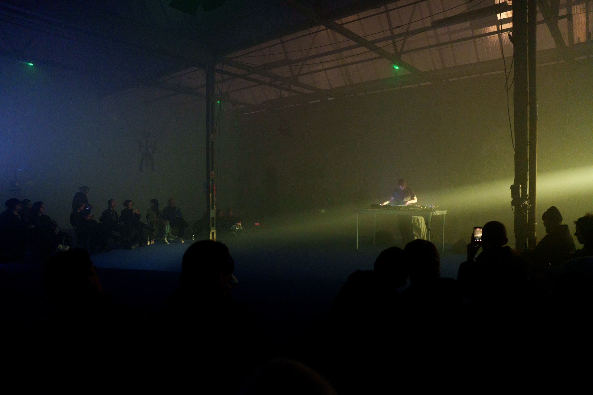
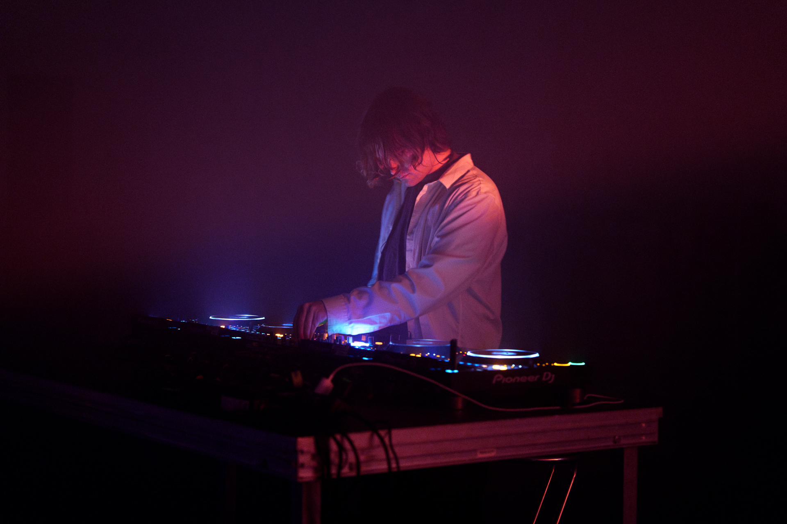
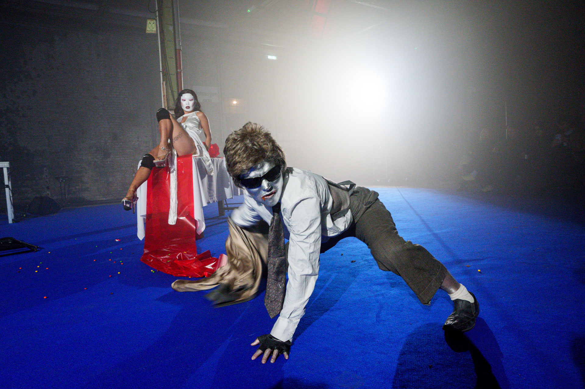
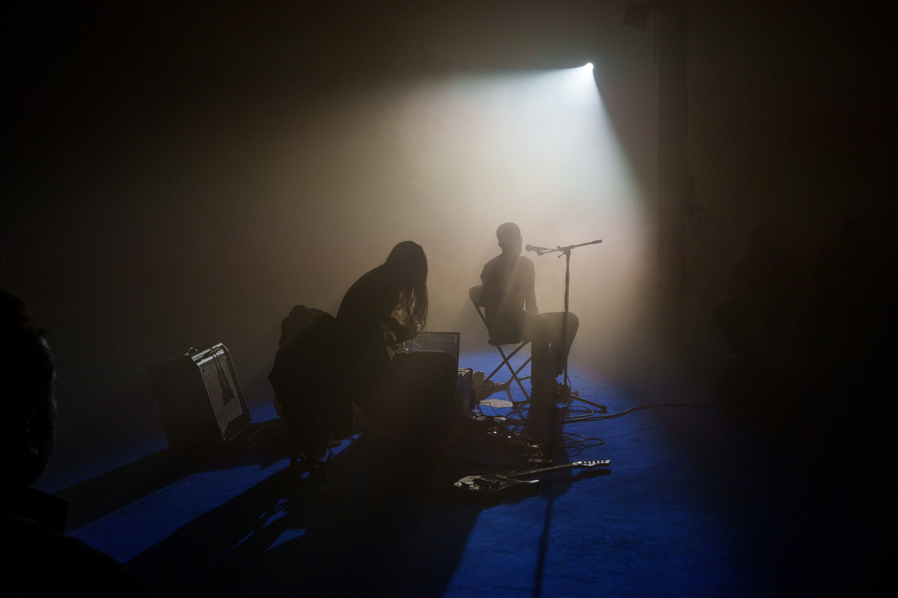
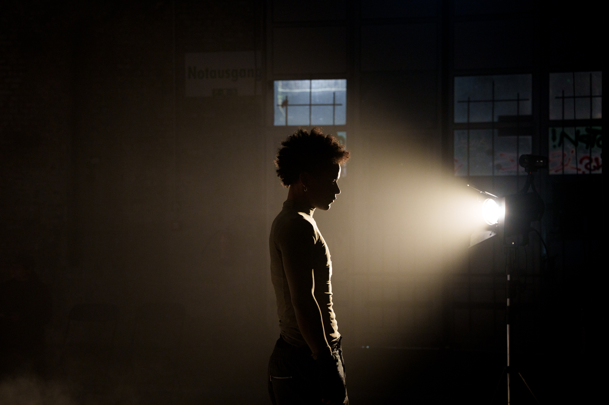
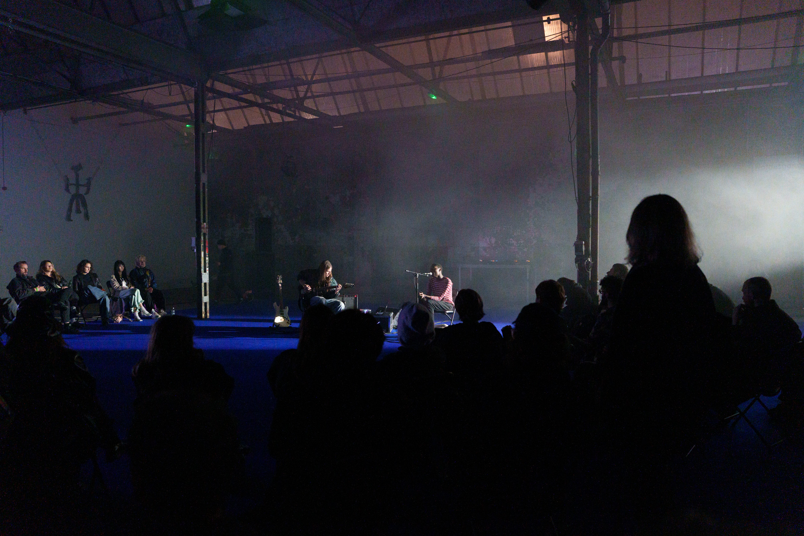
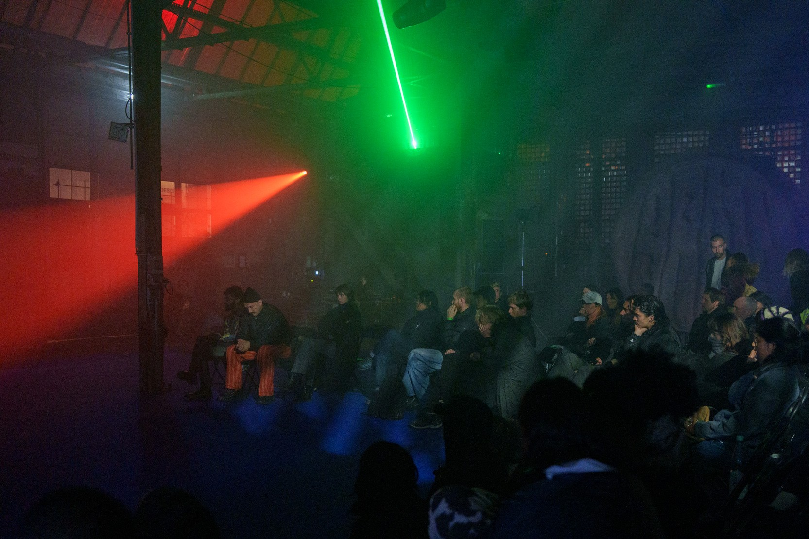

Creamcake 3hd 2025: Vertigo
Worked for light designer Shaly López at 3hd 2025: Vertigo Festival by Creamcake in Berlin: built the 3D previsualization in Capture and Blender and operated the show, mainly the lasers, programmed live in TouchDesigner. Performing artists included TOURS, Mug (Ludwig Wandinger & Yves B Golden), Joshua Woolford w/ Sippin’ T & Lie Ning, Star & Stan and Kinlaw.






